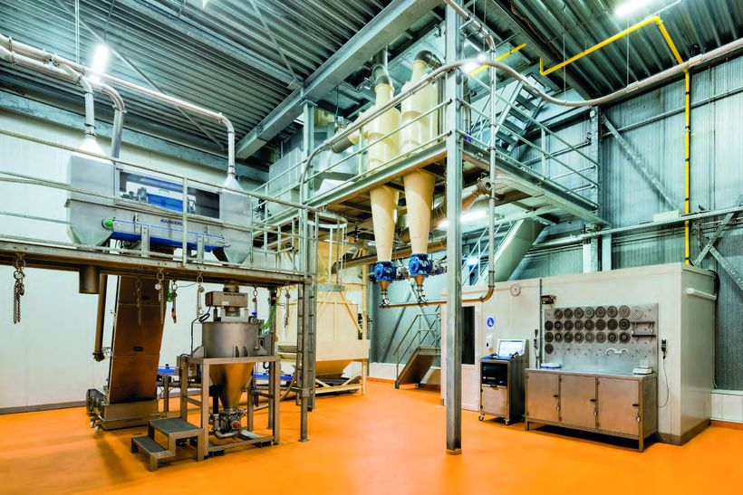

04 · In de praktijk · Food
Pneumatisch transport bij Driessen Food Extrusion
Twee vacuümtransportlijnen verbinden de productie en herverwerking van extrudaten bij Driessen Food Extrusion in Deurne.
- 2
- vacuümtransportlijnen
- 1
- ontvangststation
- ca. 30 m
- eerste transporttraject
De eerste lijn brengt extrudaten vanaf de koeler naar een cycloon met stoffilter. Na verkleinen en zeven keert de grove fractie via de tweede lijn terug naar hetzelfde ontvangststation.
Lees het project online